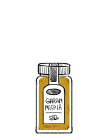

garam masala
Garam Masala — garam/hot, masala/mixture of ground spices — as its name suggests, is an Indian mixture of varying quantities of ground spices. The choice of spices varies according to region and personal taste. Typical ingredients include fennel, black/white peppercorns, cloves, cinnamon, mace, cardamom pods, curry leaf, cumin and coriander.
Garam masala recipe (45 g):. Mix 12 g coriander seeds, 10 g cumin seeds, 6 g cardamom(green), 4 g cloves, 3 g black peppercorns, and 3x8cm sticks of ceylon cinnamon(equals ~4 g/1.5 tsp ground cinnamon). Extra(optional) aromatic spices include: 0.5 g bay leaf, 1.5 g(1 1/2 star) star anise, 3 g fennel seeds, 0.7 g nutmeg, 1 g black cardamom, and 1.2 g mace (1 strand). Toast spices in a pan at low heat for 1-2 minutes until fragrant and have a crunch to them, transfer the lot to a grinder or mortar and pestle and grind them into a fine powder. Let cool before storing..